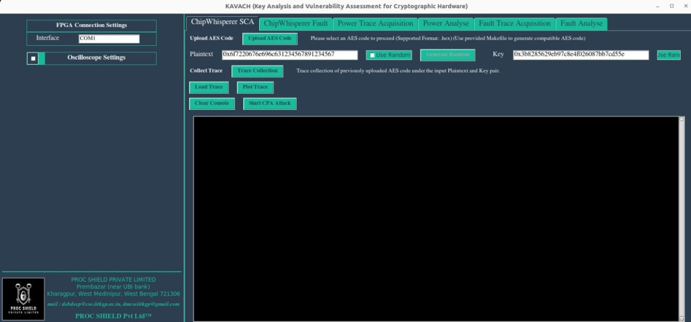
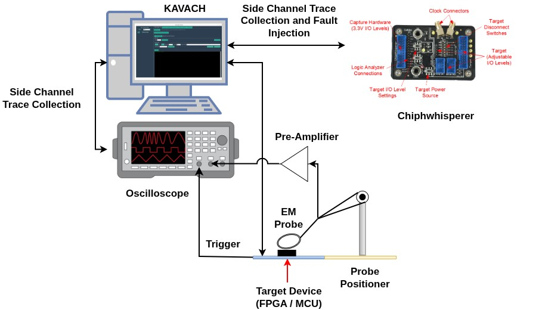
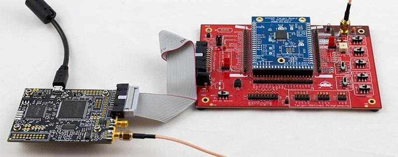

FLAGSHIP PRODUCT
KAVACH
Key Analysis and Vulnerability Assessment for Cryptographic Hardware — an integrated platform for side-channel and fault analysis, built on over a decade of side-channel testing expertise.

KAVACH interface — ChipWhisperer side-channel analysis panel
SIDE-CHANNEL & FAULT ANALYSIS
An integrated analyzer, not a pile of separate tools
PROC SHIELD is designed to address critical needs in embedded security testing. KAVACH eliminates a key bottleneck in embedded security research by offering built-in functionality to capture power and electromagnetic (EM) measurements directly from cryptographic co-processors under evaluation. It supports both power and fault attack analyses, and allows seamless configuration and control of both FPGA and oscilloscope components via an intuitive GUI.
- Power & EM trace capture from crypto co-processors
- Combined power-attack and fault-attack analysis
- One GUI to control both FPGA and oscilloscope
- Direct AES trace generation via ChipWhisperer boards
HOW IT CONNECTS
From target device to trace, end to end
KAVACH ties together the oscilloscope, EM probe, pre-amplifier, and target device into one measurement chain — and layers in ChipWhisperer support to cut hardware costs further.
AFFORDABLE, ACCESSIBLE TESTING
Cutting-edge testing without the cutting-edge price tag
Expanding on traditional functionalities, KAVACH enhances affordability and accessibility by enabling direct trace generation through communication with ChipWhisperer boards. This facilitates the generation of AES traces for both power and fault analysis without requiring an oscilloscope — eliminating the dependency on external high-cost equipment and making cutting-edge security testing feasible in low-cost environments.


ChipWhisperer capture hardware connected to a target board in a KAVACH test setup